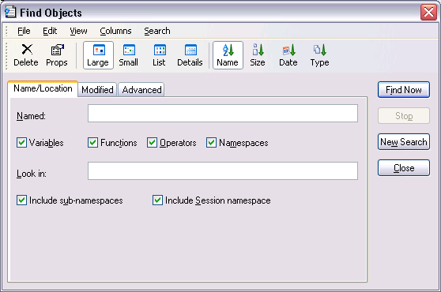
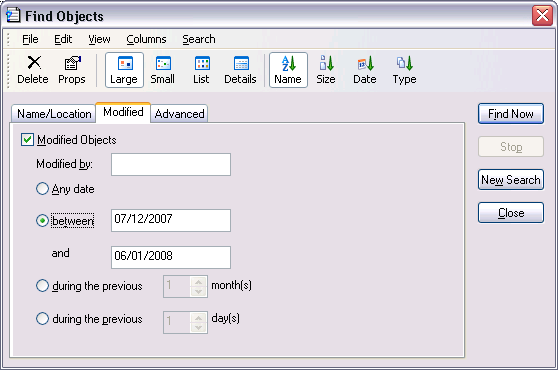
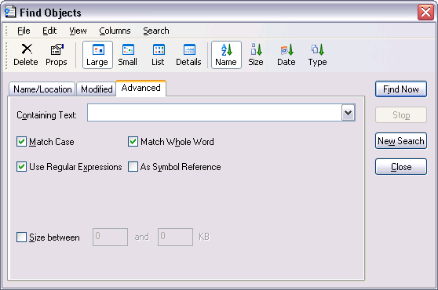
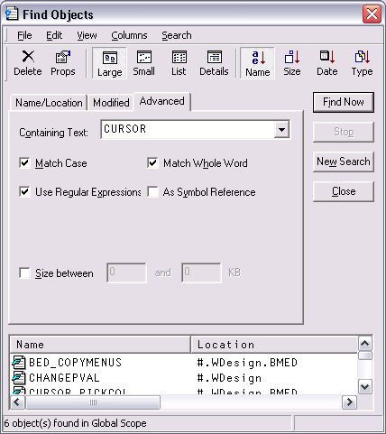

The Find Objects tool is a modeless dialog box that may be toggled on and off by the system action [WSSearch]. In a default Session, this is attached to a MenuItem in the Tools menu and a Button on the session toolbar. This tool allows you to search the active workspace for objects that satisfy various criteria.
The first page allows you to specify the name of the object which you wish to find and the namespace(s) in the workspace that are to be searched for it.

You type the name of the object you wish to find into the field labelled Named. To locate all objects beginning with a particular string, enter the string followed by a '*' character. For example, if you enter the string FOO*, the system will locate all objects whose name begins with FOO.
Four check boxes are provided for you to specify the types of objects you wish to locate. For example, if you clear Variables, Operators and Namespaces, the system will only search for functions.
You can restrict the search to a particular namespace by typing its name into the field labelled Look in. You can also restrict the search by clearing the Include sub-namespaces and Include Session namespace check boxes. Clearing the former restricts the search to the root namespace or to the namespace that you have specified in Look in, and does not search within any sub-namespaces contained therein. Clearing the latter causes the system to ignore ⎕SE in its search.
The second page, labelled Modified, allows you to search for objects that have been modified by a particular user or at a certain time

To make the search dependent upon modification, you must check the Modified Objects check box.
To locate objects modified by a particular user, enter the user name in the field labelled Modified by. Otherwise leave this blank.
To find objects which have been modified at a certain time or within a specified period of time, check the appropriate radio button and enter the appropriate dates or time spans.
The third page, labelled Advanced, allows you to search for objects that contain a particular text string.

If you wish to search for objects containing a particular character string, type the string into the field labelled Containing Text.
Match Case specifies whether or not the text search is case sensitive.
Use Regular Expressions specifies whether or not regular expressions are applicable. For example, if you enter FOO* into the field labelled Containing Text and check this box, the system will find objects that contain any text string starting with the 3 characters FOO. If this box is not checked, the system will find objects that contain the 4 characters FOO*.
Match Whole Word specifies whether or not the search is restricted to entire words.
As Symbol Reference specifies whether or not the search is restricted to APL symbols. If so, matching text in comments and other strings is ignored.
If you wish to restrict the search to find only objects whose size is within a given range, check the box labelled Size is between and enter values into the fields provided.
When you press the Find Now button, the system searches for objects that satisfy all of the criteria that you have specified on all 3 pages of the dialog box and displays them in a ListView. The example below illustrates the result of searching the workspace for all functions containing references to the symbol CURSOR.

You may change the way in which the objects are displayed in the ListView using the View menu or the tool buttons, in the same manner as for objects displayed in the Workspace Explorer. You may also edit, delete and rename objects in the same way. Furthermore, objects can be copied or moved by dragging from the ListView in the Search tool to the TreeView in the Explorer.
If you wish to specify a completely new set of criteria, press the New Search button. This will reset all of the various controls on the 3 pages of the dialog box to their default values.